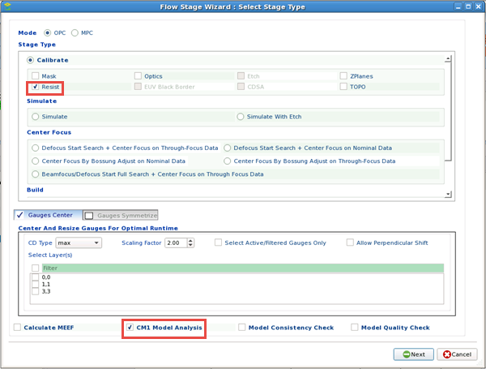
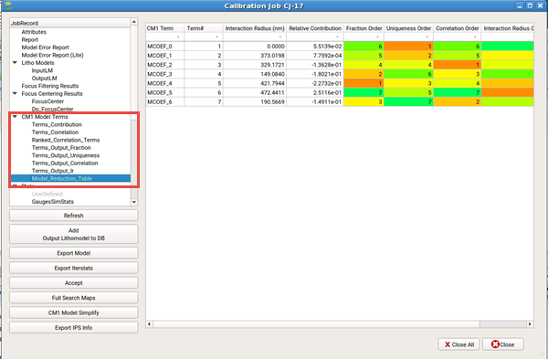

Calibre nmModelflow stages that include
a CM1 resist model can have additional analysis information added
to the job results. This information can be used to simplify the
model (by reducing the number of terms in the model) such that it
simulates faster with a very similar result.
Prerequisites
Note: There are multiple methods for adding CM1 resist model
analysis to the results. This method describes the stage through
calibration job steps.
Procedure
- In the
Database Browser, select the Stage tree and click Add
Calibration Stage.
- In the
Select Stage Type page, select OPC, then select one of the options
that enable the CM1 Model Analysis checkbox (OPC > Calibrate
> Resist, OPC > Simulate, or OPC >
Build > Build Resist).

Ensure that CM1 Model Analysis is selected, then click Next to
continue.
- Complete
defining the stage as normal. The CM1 Model Analysis checkbox only
adds the mdf cutline cm1_model_terms command at the end of the stage
creation command script.
- Switch
to the Calibration Job Manager tab, and define
a new calibration job with the stage you defined. Run the calibration
job as normal.
- When the
run completes successfully, click View to
open the Calibration Job Report.
Note: The CM1 Model Terms section only appears when
you select CM1 Model Analysis or if you click the CM1 Model Simplify
button. It is hidden otherwise.

- Use the
list to inspect the different sorting of the data from analyzing
the CM1 model.
Terms_Contribution —
Contains the contribution of CM1 terms to gauges.
Terms_Correlation —
Contains the correlation for CM1 terms.
Ranked_Correlation_Terms —
Contains a list of pairings of CM1 terms listed from highest to
lowest frequency of correlation.
Terms_Output_Fraction —
Contains the CM1 terms sorted by fractional contribution to the
results.
Terms_Output_Uniqueness —
Contains the CM1 terms sorted by uniqueness of the terms and their
contribution to the results.
Terms_Output_Correlation —
Contains the sorted output terms by correlation. Terms with the
smallest contribution are ranked higher.
Terms_Output_Ir —
Contains the sorted output terms by interaction radius.
Model_Reduction_Table —
Contains a summary table of all the items above showing rankings.
A plot (CM1TermContribution) is also added to the Plots list.
This plot shows contribution of the various terms in the CM1 model
relative to the other terms. The labels used for the plot is as
follows:
- (Optional)
Continue to the task, “Simplifying CM1 Models From Results”.